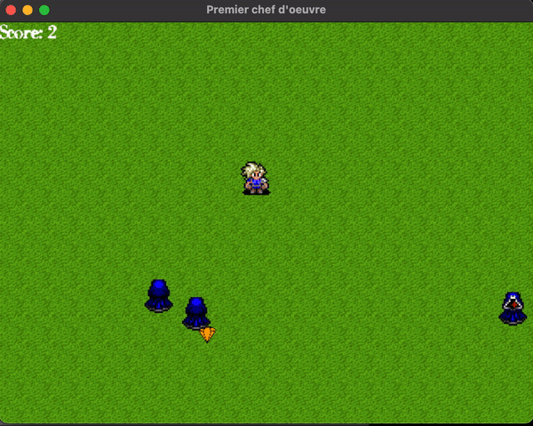

Premier chef d'oeuvre
Pour le premier chef d'oeuvre, nous avons décidé de créer un jeu d'arcarde en 2D.
Ce jeu implémente différentes contraines telles que les chaines de markov.
Nous avons décidé que la matrice des transitions agirait sur le déplacement de personnages.
Notre jeu consiste à ramasser le plus de diamant possible en évitant de se faire tuer.
Dès que le personnage ramasse un diamant, un ennemi en plus arrive sur la map.
Plus il y a d'ennemis, plus le jeu devient difficile jusqu'à mourir si un ennemi nous touche.

Code du jeu
Notre matrice prend la forme
markov[4][10] = { {0,0,0,0,0,0,0,1,2,3},
{0,0,0,1,1,1,2,2,2,3},
{0,1,2,2,2,2,2,2,2,3},
{0,0,1,1,2,2,3,3,3,3} };
Ici une ligne correspond à une direction. Le 0 est pour up, le 1 pour right, le 2 pour down et le 3 pour left.
Dans le cas où notre ennemi est entrain d'aller vers le haut : on voit qu'il a 7/10
chance de continuer à aller vers le haut et 1/10 d'aller en bas, gauche, droite
Comment jouer ?
- La partie est lancée directement
- Il faut éviter les ennemis et prendre les diamants en utilisant les touches directionnelles
- une fois perdu utiliser la touche esc pour quitter
Pistes pour améliorer notre jeu ?
- Avoir un menu avec le score et les anciens scores
- Avoir un pseudo avec un score
- Avoir la possibilité de rejouer sans quitter la fenêtre
- Améliorer la fluidité du jeu